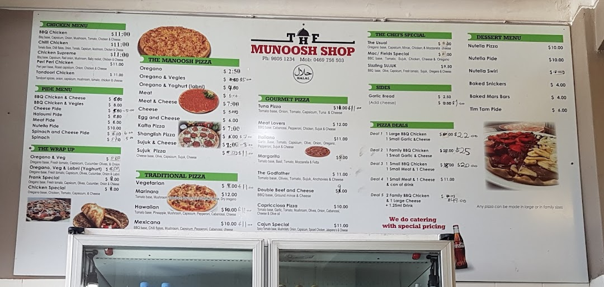

Our Menu
The Munoosh Shop offers a wide variety of delicious Lebanese food made fresh every day. We have something for everyone, including traditional manoosh, pizzas, burgers, wraps, sides and refreshing drinks.
The Munoosh Shop offers a wide variety of delicious Lebanese food made fresh every day. We have something for everyone, including traditional manoosh, pizzas, burgers, wraps, sides and refreshing drinks.
Enjoy freshly baked Lebanese manoosh with a range of traditional and modern toppings.
Choose from delicious pizzas and wraps made fresh using quality ingredients.
We also serve burgers, hot chips, garlic bread, drinks and many other tasty sides.
Browse our complete menu below to see all of our available meals and drinks.
